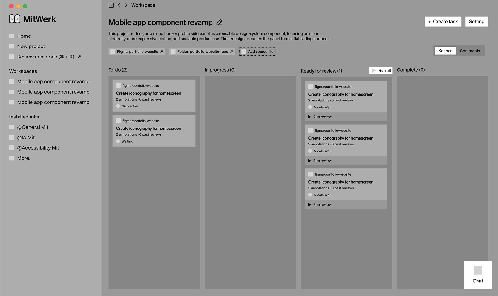
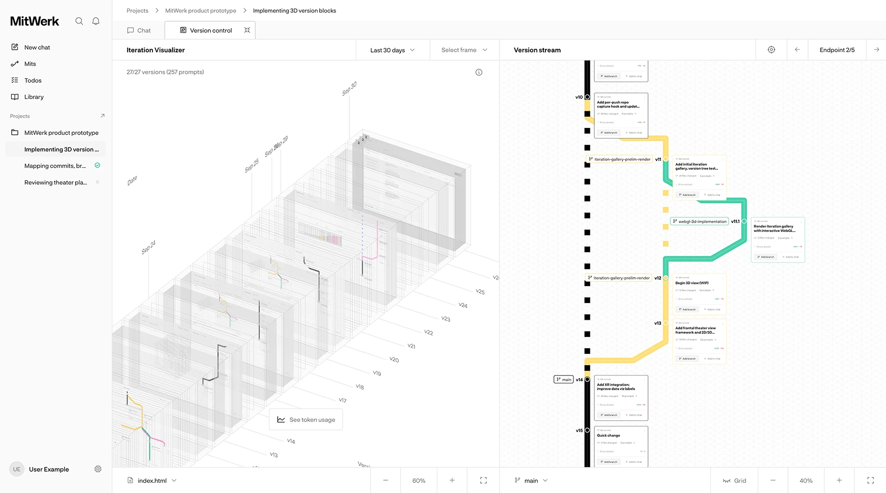

Verso
Verso is a visualization tool for tracking key design decisions and milestones across AI-assisted creative workflows.
.svg)
-
Role
Lead product designer
-
Collaborators
Echo Zhou, Mavis Zhang, Waiting WongUX research, usability testing and iteration, high-fidelity feature and component design, hackathon video submission
-
Timeline
September–October 20261 month (3 weeks in class and 1 hackathon weekend)
-
Tools
 Codex
Codex Claude Code
Claude Code Cursor
Cursor Figma
Figma
I independently built a mid-fidelity prototype for this project, then led a four-people team to take it to high fidelity during a hackathon. Across both phases, I handled end-to-end product and UI design, the design system, UX research, prototype vibe coding, and AI branding animation. Our final deliverables included a view-only functional web prototype (plus a VR edition) populated with local demo data, along with a 7-minute presentation video.
Problem Space
“Sometimes you may sit at your desk prompting all day, and by the end you don’t really remember what you did.” — Interviewee #2
In a traditional workflow, designers can easily trace how they arrived at a final result through sketches, iterations, and versioned Figma files. With vibe coding, most of that decision-making happens inside a conversation with AI. By the end of a project, designers are often left with only two things: a working product and a massive chat history—making it difficult to revisit the specific prompts and turning points that shaped the design.
To understand how this plays out in practice, we interviewed five creative vibe coders—including product designers, design engineers, and creative technologists. While all five reported higher productivity, they described the workflow as a cycle of constant patching and stitching with little structural oversight, surfacing three main pain points:
-
Past commits are hard to revisit
Reviewing an earlier design state requires restoring and running a previous build locally.
-
Rapid prompting and auto-piloting create a gap in memory
Designers often prompt for hours on autopilot, making it difficult to recall which inputs actually shaped the outcome.
-
Documenting the prompt-by-prompt process takes extra work
Keeping a visual record requires manually taking screenshots along the way, which breaks creative flow.
It's hard to revisit a past decision through a thick stack of prompts.
Problem Statement
How might we help designers better document their key iterations and decision-making when vibe coding?
stream of prompts→thread of human ideas
Product highlights
Look at the same change three ways
The gallery sits beside the conversation. Stacked version blocks show how the work accumulated. Frame playback lets a designer scrub through the visible changes, and the rebuilt prototype lets them revisit an earlier interaction.
Version block visualization
Screen capture playback
Prototype replay based on git commits
Choose which changes become milestones
A reminder appears in the chat when enough time or change has accumulated. The designer can open the card, choose a version and describe why it matters. This leaves a small amount of writing in the workflow and gives the designer control over which decisions belong in the story.
Replay the idea thread
Each milestone links an explanation to a point in playback. Following the thread brings the relevant frames back into view, so a designer can show someone else the sequence of decisions behind the result.
Version snapshot: mechanism
The capture mechanism saves a local frame after an agent prompt. A Git push groups those frames into a version. The saved commit also gives the prototype a point it can rebuild and replay.
prompt → version → milestone
Back-end mechanic
Design system components & interaction
To-do drawers
Version cards mid-chat stream
Design iterations
01 Pivoted from project management to documentation
Verso began as a kanban tool for automated agent testing and Figma feedback. Early feedback showed the scope was too broad, and agents still couldn’t verify work as reliably as people.

An earlier iteration organizing the work around tasks and their status.
02 From “version stream” to “idea thread”
The version stream showed commit history to reflect vibe coding’s branching nature. But usability tests showed designers actually see process as linear: all trials eventually converge, and since pushes can be automated, commits don’t reflect their actual process. The idea thread shows milestones instead of every commit, focusing on decisions users choose to document, with a potential trade-off of convenience.

The Version Stream (right) visualizes Git history as an interactive decision tree.
VR exploration
The VR edition explored another way to review the same history. A designer could move among versions and frames, draw on a frame and record a spoken annotation while looking at the work.
Browsing versions and frames
Drawing directly on a frame in the VR prototype.
Outcome & reflection
Our goal was to deliver a functional prototype that demonstrated Verso’s full feature set and visualization interactions as a standalone app. By wiring live version capture into my own workflow while building Verso, I was able to evaluate the tool in real time—using it to navigate my development timeline and pull visual artifacts directly into our hackathon presentation and this case study. While the prototype validated the core interaction model, scaling Verso into a full production app with an integrated AI chat panel would require dedicated backend engineering; our current build relies on Vercel’s free storage tier and is already reaching maximum capacity.
We ultimately submitted the project to the SVSD Virtual Hackathon alongside 300+ competing teams. While we were not selected as finalists, producing our 7-minute submission video—which blended screen-recorded product walkthroughs with live-action cinematography—pushed us to articulate our iterative process clearly and strengthened our visual storytelling skills.

Meanwhile, building this prototype with AI reshaped my design process in three ways:
- Designing rules and systems: Instead of manually tweaking individual screens, working with AI shifted my focus toward defining conditional logic, component rules, and system-level constraints.
- Stress testing at scale: A functional prototype gave me the opportunity to test how the visualization system handled growing volumes of data, revealing where information density compromised legibility—something static Figma prototypes couldn't capture.
- More room for experimentation: AI helped fill in implementation details and complete secondary interactions, allowing me to explore less-prescriptive design directions.